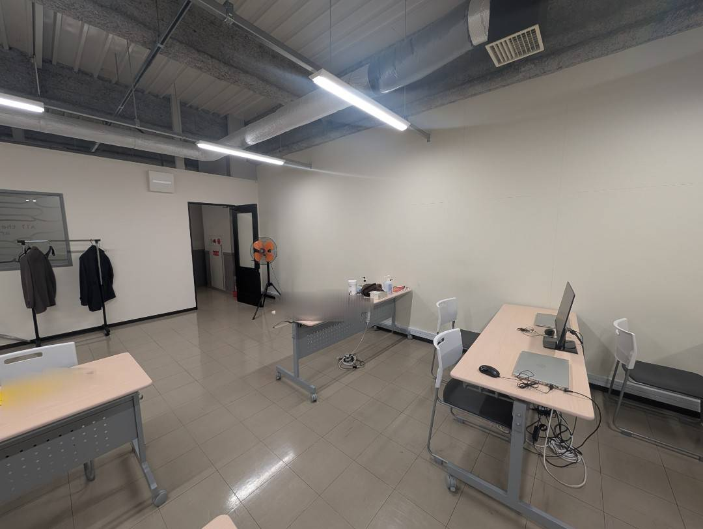
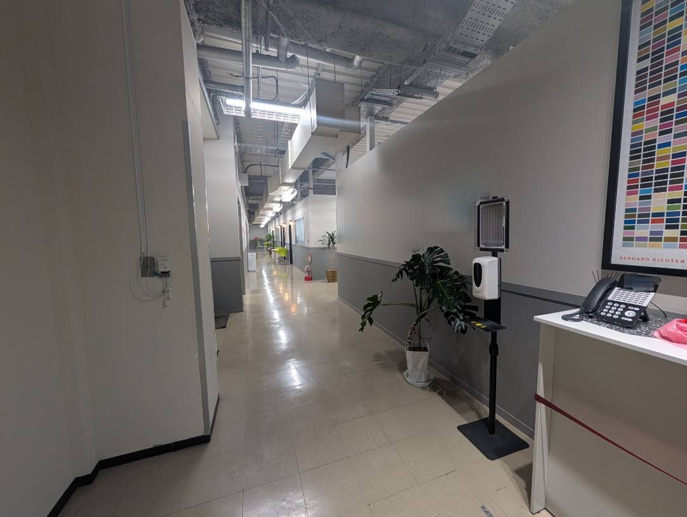
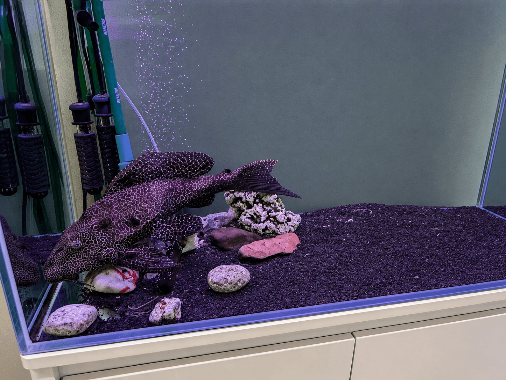

校内写真
学びの空間
WAM ITカレッジの校内は、集中できる教室と落ち着いた共有スペースで構成されています。
教室



授業や実習を行う教室です。集中して学習できる環境が整っています。
廊下

学生が移動や休憩に利用する廊下です。
水槽・絵画


校内には水槽や絵画が設置され、落ち着いた雰囲気を演出しています。
アクセス
当校は ***ビルの中にあります。
駅から徒歩10分圏内とアクセスも良好です。
近隣には商店街もあり、学生生活に便利な環境です。
商店街では校長が、よく箱でumaibouを購入しています。